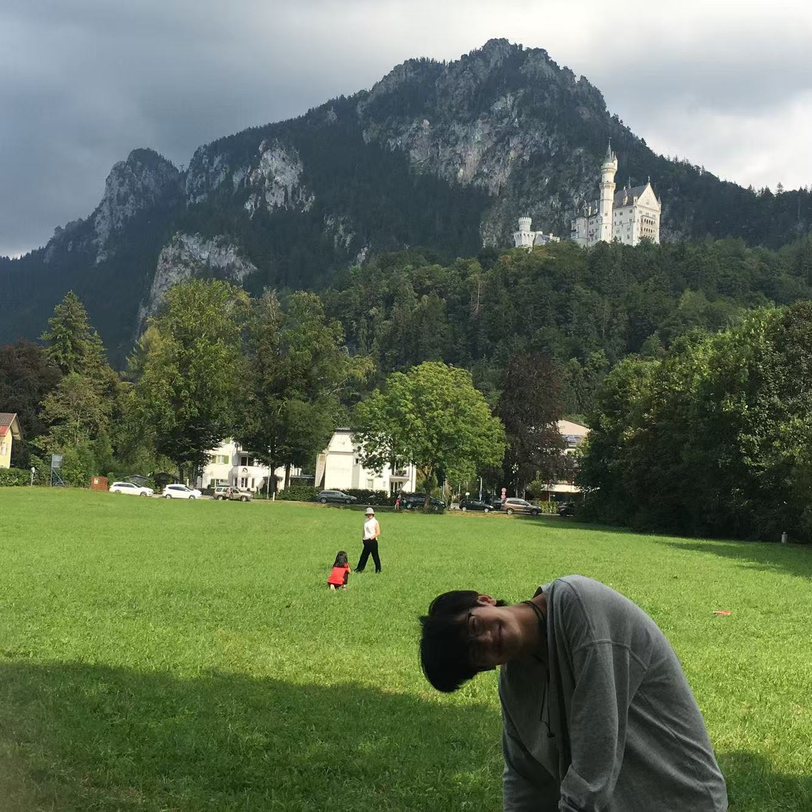

Computer Science · Ann Arbor, Michigan
Boyuan
Zheng
Researching efficient machine learning systems and their applications.
A little more about me
01 — Profile
About me
I am a second-year Ph.D. student in Computer Science and Engineering at the University of Michigan, advised by Professor Z. Morley Mao. I received my undergraduate degree in Computer Science and Data Science from Michigan.
My research spans efficient machine learning systems and their applications, including language models, multimodal models, and intelligent agents.
02 — Selected work
Selected publications
A selection of recent work, refreshed from Google Scholar on November 19, 2026.
- 2026
- 2026
- 2026
- 2026
-
2026
A Cloud-Edge System for Multimodal Clinical Screening in Resource-Constrained Rural Settings
Machine Learning for Healthcare · PMLR 340
- 2026
-
2026
Dynamic Linear Attention
ICML 2026
- 2026
- 2026
-
2026
Speculative Decoding for Multimodal Models: A Survey
Preprints.org
- 2026
-
2025
Harmful Terms and Where to Find Them: Measuring and Modeling Unfavorable Financial Terms and Conditions in Shopping Websites at Scale
Proceedings of the ACM Web Conference 2025
For the complete and current record, visit Google Scholar .